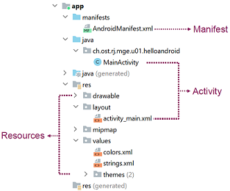
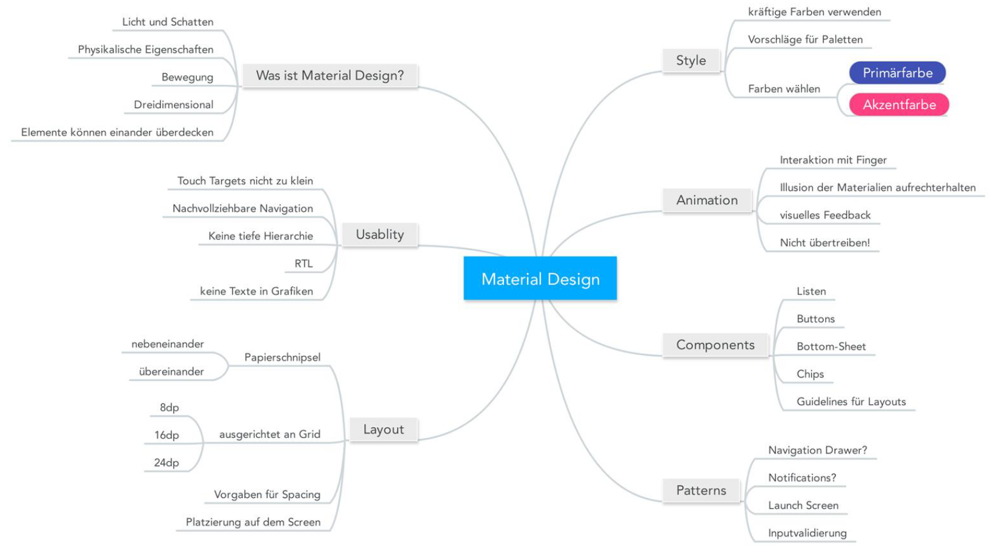
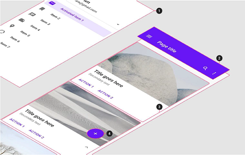

Android Einführung
Motivation: Marktanteil Android weltweit ~70%, schweizweit 44%. Single- vs Multiplatform (Codebase), Native/Hybrid App/Web App. Hybride und Web Apps erreichen nativen Look&Feel über visuelles Styling. Hybride Apps greifen über native Libraries auf Device Featuers zu. Beispiele zu CP Native: Flutter, Xamarin / CP Hybrid: Cordova, Ionic. Vorteile Android SDK: Voller Funktionsumfang, Keine Tools/Einschränkungen von Drittanbietern, Konzepte und Tools sind Basis vieler Frameworks.

Grundlagen, Begriffe
Android: Seit 2003, Google seit 2005. V1.0 in 2008. Linux-basiert. Entwickelt von Open Handset Alliance, unter Google-Leitung (Android Open Source Project). Lose miteinander gekoppelten Komponenten (Activities, Content Providers, Services und Broadcast Receiver). Google ist Gründer der OHA, Mitentwickler von Android und Anbieter wichtiger Services und Apps.

Fragmentierung
beschreibt die verschiedenen aktuell verbreiteten Android-Versionen.
Schuld daran sind Hersteller, die alte Geräte nicht mehr mit neuen
Updates versorgen. Google-Dienste
sind nicht zwingend, beispiel Huawei verwendet AOSP. Bieten oft
komfortablere Alternativen zu Standard-Libraries. Wichtig: Google
Play Store. Rückwärtskompatibilität minSdkVersion: Ältere Geräte können meine App nicht nutzen. maxSdkVersion: nutzlos? targetSdkVersion: gibt an, auf welche Version die App getestet ist und sicher
stabil läuft. compileSdkVersion: wird so kompiliert, beinhaltet neue Funktionen, aber diese werden
nicht verwendet (?)
Wird Code eines API Level verwendet, der höher ist als die minSdkVersion, muss das verwendete Device abgefragt und ein Fallback definiert werden. Um das zu vermeiden gibt es Android Jetpack / AndroidX. Erweitert die Android SDK, wird unabhängig von Android entwickelt. Eigene Versionierung. Verwendete Klassen müssen nur erben von AppCompatActivity statt Activity, AppCompatButton statt Button, etc etc.
Tooling
Android Studio wird von JetBrains zur Verfügung gestellt. Beinhaltet Android SDK und GUI-Wrapper für viele SDK Tools.
-
Setzen der JAVA_HOME Environment Variable auf korrektes
Verzeichnis:
/usr/lib/jvm/jdk-17/bin/(Huawei Ubuntu in~/.zshrc- check mitecho $JAVA_HOME). - Setting für verwendete Java SDK in Android Studio: Optionen ->Build, Execution, Deployment -> Build Tools -> Gradle.. Einstellung Gradle JDK auf "Android Studio default JDK Version 11.0.13".
Android SDK
-
SDK-Manager:
/usr/bin/android/cmdline-tools/latest/bin/sdkmanager -
Plattform Tools inkl.
adb(Debug Bridge?) - Platform SDKs
platforms -
Emulator:
/usr/bin/android/emulator/emulator - Emulator Images:
system-images - Intel HAXM (Virtualisierung/Emulator Unterstützung)
Programmiersprache
Grundlegend Java, seit 2019 durch Kotlin abgelöst als von Google empfohlene Sprache zur Entwicklung. Kotlin ist interoperabel mit Java-Code.
Android Grundkonzepte
Apps bestehen aus lose gekoppelten, wiederverwendbaren Komponenten wie Activities, Content Providers, Services und Broadcast Receivers, etc. Lebenszyklus: vom OS verwaltet, kann App jederzeit terminieren. Kommunikation zwischen Komponenten/Apps evenfalls nur via OS.

Activity
= eine Aufgabe. Besitzt eine graphische Oberfläche und verarbeitet
Benutzereingaben. Main Activity wird beim App-Start ausgeführt. Muss im Manifest registriert werden. Bei Activity Start wird XML verknüpft: onCreate () { setContentView( R.layout.activity_main ); }. Ereignisse im XML File werden via Listener verarbeitet. Zustände
und Callbacks bei Zustands-Wechseln. Methoden werden bei Bedarf
überschrieben. Zustände: Created >> Started >> Paused >> Resumed
>> Stopped >> Destroyed. Callbacks: onCreate, onStart, onRestart, onResume, onPause, onStop,
onDestroy.
Typisch: Datensicherung bei onPause() oder onStop(), Dienste ein-/ausschalten bei onResume/onPause
(oder: Lifecycle-aware components), Zustand des GUI erhalten bei onSaveInstanceState/onRestoreInstanceState (oder: ViewModel).
Event Handling
Basic: Listener reagieren auf Ereignisse im GUI, wenn registriert. Objektreferenzen abholen via findViewById(int). Je nach Event-Typ und View Item unterschiedliche Interfaces, die überschrieben werden können.
xxxxxxxxxxButton button = this.findViewById(R.id.button_example);button.setOnClickListener(new View.OnClickListener() { public void onClick(View view) {}});Resources
Werden im Java Code über die R-Klasse
angesprochen, die wird beim Build erzeugt und ist mit Namespaces
strukturiert. Resource ID als int. Enthält Layouts, Bilder, Videos, ... Value Resources
werden in einzelnen Files nach Typen gruppiert: Farbwerte,
Dimensionen, Texte, Styles. Qualifiers
im Dateinamen können verwendet werden, um spezifisch auf Endgerät
verschiedene Informationen zu laden. Unterscheidung nach Sprachen,
Auflösungen, Gerätetypen, API-Versionen etc..
Dimensionen
dp: density-independent pixel (für fast alles), sp: scale-independent pixel für schriften px/pt: pixel/punkte (nie), in/mm: inch / millimeter (auch nie..)
Manifest
Inhalt:
alle Informationen die Android braucht, um die App installieren und
darstellen zu können. d.h.
App-ID/Name (package="dev.kuendig.choirmate": eindeutige Id, definiert Namespace)
Version (aus build.gradle ergänzt) (versionName: lesbar / versionCode: positiver Int) und Logo, min- und targetsdkVersion (build.gradle), enthaltene Komponenten, Hard- und Softwareanforderungen,
benötigte Berechtigungen.
Intents
Dienen zur Kommunikation zwischen Komponenten, wechseln zwischen
Activities. Expliziter
Intent: Zeige einen spezifischen Screen, normal eigene App. Impliziter
Intent: Zeige eine passende Komponente für die aktuelle Aktion,
normal fremde App. Registrieren auf implizite Intents im Manifest.
Bei Verwendung immer erst prüfen, ob eine passende App vorhanden ist
mit bool hasReceiver = intent.resolveActivity(getPackageManager()) !=
null; .
Benötigt <uses-permission
android:name="android.permission.QUERY_ALL_PACKAGES"
/> im Manifest.
Ziel des Intents definieren mit intent.setData("Uri:Datei/webseite/telnr/..."), startActivity(Intent)`` Wenn der Intent ein Resultat zurückliefert:
``startActivityForResult(Intent).
Übergeben von Daten via Extras (primitive Types, String und
serialisierbare Objekte): intent.putExtra("solution", 42); Kommunikation mit anderen Komponenten möglich (W06).
Tasks / Back Stacks, Prozesse, Threads
Alle ausgeführten Activites werden in einem Back Stack bzw. Task verwaltet (Overview Screen zeigt die verschiedenen offenen Tasks). Activities innerhalb Task können mehrfach vorhanden sein oder auch zu verschiedenen Apps gehören. Acitivities können auch in neuen Tasks gestartet werden. Jede App / APK wird mit einem eigenen Linux-User installiert (Sandbox Prinzip). APK hat genau 1 eigenen Prozess, darin mind. den Main-Thread und evtl. weitere Threads. Blockieren des Main-Trheads führt zum Application Not Responding (ANR-) Screen. GUI-Aktualisierung nur aus Main-Thread möglich, langlaufende Operationen immer in anderen Thread (Runnable, (Coroutine?)) auslagern.
Optionen zur GUI-Aktualisierung: Activity.runOnUiThread(Runnable), View.post(runnable), Handler und Looper
Rückwärtskompatibilität
API Level identifiziert die Android API Version. Höhere Levels enthalten immer alle tieferen, aber ggf. als deprecated markiert. Trade Off: niedrig um alle Geräte zu erreichen, hoch um die neuen Funktionen nutzen zu können. Werte in Manifest bzw. Gradle:
minSdkVersion: ältere Geräte können meine App nicht nutzen. maxSdkVersion: Wird von Android ignoriert, von Google Play Store als Filter
verwendet. Empfehlung: ignorieren. targetSdkVersion: gibt an, auf welche Version die App getestet ist und sicher
stabil läuft. compileSdkVersion: gibt an, mit welcher API die App kompiliert wird/wurde.
Ziel: minSdk <= targetSdk <= compileSdk
Wird Code eines API Level verwendet, der höher ist als die
minSdkVersion, muss auf dem Gerät ein Versionscheck
gemacht und ein Fallback definiert werden. Um das zu vermeiden, gibt
es Android Jetpack / AndroidX. Erweitert die Android SDK, wird unabhängig von Android
entwickelt. Eigene Versionierung. Verwendete Klassen müssen nur
erben von Komponenten der AppCompat Jetpack-Library. AppCompatActivity statt Activity, AppCompatButton statt Button, etc etc. Hiess früher Android Support Libraries, Namespace ist androidx. Integration durch Android Studio automatisch in neuen
Projekten.
Android GUI Programmierung
Zwei Arten zur Darstellung des GUI: Beschreibung im XML vs. Quellcode (Java oder Kotlin)
Views und View Groups (auch Layouts, Containers)
Stellen einen hierarchischen Baum dar, nach Composite Design
Pattern. View
ist Basisklasse aller GUI Elemente. Aufgaben: Darstellung und
Event-Verarbeitung. ViewGroup
dient der Anordnung von Kindern nach einem Muster. Ist
strukturierend aber selber unsichtbar. Verschachtelung ist beliebig
möglich, aber immer eine Performancefrage.
Einfache Layouts sind LinearLayout, RelativeLayout, ConstraintLayout, AdapterLayouts sind ListView, GridView, RecyclerView (Google empfiehlt).
Höhe und Breite müssen zwingend definiert sein. layout_width und layout_height (immer nur "ein Wunsch") mit entweder wrap_content oder match_parent
(kann über einen Screen hinausgehen). Jede Eigenschaft mit Präfix "_layout" dient als Wunsch an das Elternelement (layout_width, layout_height, layout_margin). padding
wird auf Element selber gesetzt. Verschiedene Abmessungen pro
Element: getMeasuredWidth/Height(), für "Wunsch", getWidth/Height() für reale Grösse.

LinearLayout: android:orientation="vertical|horizontal" , android:layout_weight="1" zur Aufteilung vom restlich verbleibenden Platz. FrameLayout
wird für Overlay-Designs verwendet. XML-Reihenfolge oder android:translationZ bestimmt die Höhe auf Z-Achse. RelativeLayout
ordnet Kinder relativ zueinander an. Viele Parameter wie android:layout_alignParentTop="true",
below="@id/x", toStartOf="@id/x",
alignStart="@id/y" (immer mit Layout-Prefix). ConstraintLayout
(Jetpack) wurde speziell für komplexe Layouts mit flacher Hierarchie
entworfen. Constraints definieren "Beziehungen zwischen
Views". Minimum 1x horizontal und 1x vertical Constraint.
Bevorzugt rein visuelles Design in der IDE. Automatische Umwandlung
in ein Constraint Layout ist möglich. Namespace Import xmlns:app="http://schemas.android.com/apk/res-auto"
Constraint-Varianten:

ScrollView hat nur ein Kind-Element und ergänzt eine vertikale Scrollbar. HorizontalScrollView für nur horizontal oder Jetpack NestedScrollView für beides. width/height=match_parent.
Adapter Layouts für Collections

Anzahl der Elemente ist nicht bekannt, aber die Struktur.
Collection von Elementen (Daten) muss dargestellt werden via
Adapter. Hint: Leere Listen vermeiden, Platzhalter verwenden durch
ein/ausblenden von Elementen. View Recycling
lässt die View-Elemente beim Scrollen wiederverwendet werden. Spart
Arbeitsspeicher bei den anzuzeigenden Elementen und Rechenzeit beim
enerieren von Views. Android Array Adapter
implementiert dies selber schon. Bietet einfache Vorlagen für
Listitems, die jeweils mit String Arrays verwendet werden können. Custom ArrayAdapter: Dient der Darstellung von komplexeren Datenklassen custom
auf dieselben Listitem-Vorlagen. Eigene Adapterklasse leitet von ArrayAdapter<custom> ab und überschreibt speziell die Methode public View getView(int position, View view, ViewGroup
parent);. Diese kümmert sich um das Erzeugen und anschliessende
Wiederverwenden von der nötigen Anzahl Views. Weiter werden von der custom-Klasse dann definiert, welche Felder in welche Textfelder der View
abgefüllt werden. Der entsprechende Eintrag wird mit Custom custom = getItem(pos); abgeholt.
View Holder Pattern: Optimieren von findViewById
pro dargestelltem Element beim scrollen, Ziel Speichern der
Objektreferenzen pro erzeugte View. Klasse ViewHolder beinhaltet nur
die nötigen Referenzen. Nach Erzeugen der View wird das Objekt mit view.setTag(viewHolder) an die View geknüpft. Abfrage mit (ViewHolder)view.getTag();.
Ergo RecyclerView
(Jetpack): ViewRecycling integriert, ViewHolder Verwendung wird
erzwungen. Weniger Overhead im eigenen Code. Ableitung von Basis RecyclerView.Adapter<ViewHolder>
benötigt zwingend eigenen ViewHolder Typen bei Implementierung.
Weiter ist Überschreiben von 3 Methoden nötig. getItemCount()
implementiert, wie viele Objekte in der Liste vorhanden sind. onCreateViewHolder(ViewGroup parent, int vt)
erzeugt ViewHolder und generiert Layout, holt Controls ab. Kein
Erzeugen der Views mehr. onBindVewHolder(ViewHolder holder, int position)
füllt die Informationen aus den darzustellenden Listenelementen in
den ViewHolder ab.
Controls (Widgets)
Namespace android.widget. Sammelbegriff für visuelle Elemente. Basisklasse ist View (nicht Widget). TextView: viele Format Attribute, integrierte Bilder (android:drawable[Start|End]), Listener möglich. beforeTextChanged, onTextChanged, afterTextChanged
sind mögl. Callbacks zum Handling von Events. Besser einfach
halten.. ImageView: Bilder. Mögli. Parameter: android:src, android:scaleType, android:tint. Button und ImageButton: lösen Aktionen via Listener aus. Ableitung von
TextView/ImgageView. StandardStyling je nach OS Version. EditText: Eingabefeld für Texte und Zahlen. Parameter android:inputType
steuert Typ und angezeigte Tastatur, Korrekturoptionen, Darstellung,
Mehrzeiligkeit. Kombination mit android:inputType="param1|param2". inputField.setError()
für Validierung, wird nach jeder Änderung zurückgesetzt. Fehlericon
bei Bedarf anpassbar.
Weitere Controls: Checkboxes, Picker, Floating Action Button, Radio Buttons,
Switches, Seek Bar, Rating Bar, Spinner...
Controls ohne XML
Layout von Android vorgegeben, übergeben werden nur einzelne
Parameter. Bsp: Fehlermeldungen. Toasts:
Einfache Rückmeldung im Popup Fenster, keine Benutzerinteraktion.
Position und Layout anpassbar. Snackbars: Jetpack-Variante f. Toast, Benutzerinteraktion möglich. Dialoge:
Antwort von Benutzer zwingend. Anpassen von Titel, Inhalt, Buttons,
... Notifications:
Mitteilungen ausserhalb aktiver Nutzung. Anpassen von Dringlichkeit,
Darstellung, Gruppierung. Darstellung mögl. in Statusbar,
Notification Drawer, Heads-Up Notif., Lock Screen, App Icon Badge. NotificationCompat aus Jetpack verwenden. Menus: Options Menu in Appbar (Hamburger Icon), Contextual Menu
(Floating oder in einer ContextActionBar), Popup Menu. Resource in res/menu
definiert Inhalt, Handlung der Auswahl innerhalb Activity. Jetpack
verwenden.
Android Strukturierung, Styling, Material Design
Strukturierung mit Fragments
Activities füllen zwingend immer einen kompletten Screen. Mehrere
in sich geschlossene Elemente auf einen Screen können mit Fragments
erreicht werden. Fragments haben einen eigenen Lebenszyklus
und können auch mehrfach auf einen Screen eingebunden werden. Fragments sind in der Android SDK "deprecated", werden
aktueller in AndroidX / Jetpack geführt. Verwendung: androidx.fragment.app.* / getSupportFragmentManager(). Lifecycle Callbacks zusätzlich: onAttach/onDetach (Fragment an Activity), onCreateView/onDestroyView (Fragment erstellen/zerstören), onActivityCreated. Parameter werden immer als Bundle übergeben, nie als Konstruktor.
Vorteile: Wiederverwendbarkeit, Wartbarkeit (kleinere Codeblöcke),
Flexibilität durch mögliche Unterscheidung Smartphone vs. Tablet. Verschachtelung möglich, innerhalb Fragment kann getChildFragmentManager() verwendet werden.

Statische Einbindung: Verhalten wie Activities. Erlaubt keine/kaum Interaktion zwischen Activity und Fragment.
xxxxxxxxxx(MainActivity.java -(setContentView)-> activity_main.xml -(xml-fragment)-> outputFragment.java -(super(R.id....))-> fragment_output.xml)
Dynamische Einbindung: Platzhalter FragmentContainerView im XML. Activity verwendet Objekt FragmentManager. Vorteile: Austauschbar zur Laufzeit, Parameterübergabe möglich, reagieren
auf Ereignisse im Fragment möglich. Ebenso sind Animationen möglich
beim Austauschen, definition in XML Files res/anim. Add to Back Stack ist optional.
xxxxxxxxxx <androidx.constraintlayout.widget.ConstraintLayout ... <androidx.fragment.app.FragmentContainerView ... tools:layout="@layouts/fragment_infos" />/>xxxxxxxxxxFragment Manager = getSupportFragmentMAnager() Fragment Transaction = mgr.beginTransaction()Kommunikation Activity >> Fragment
- Informationen können via Bundle-Objekt übergeben werden.
-
Erstellen und übergeben von Bundle mit
OutputFragment.create()(Java) bzw.newInstance()(Kotlin).
Deshalb weil der Konstruktor-Parameter nicht neu ausgeführt wird, z.B. bei Rotation des Gerätes. - Public Methoden auf dem Fragment können von der Activity aufgerufen werden.
Kommunikation Fragment >> Activity nur via Implementation von Callback-Interface (Dependency Inversion).
xxxxxxxxxxpublic interface OutputFragmentCallback { void onTextTapped(String text); }public class MainActivity implements OutputFragmentCallback { public void onTextTapped(String text) { // was passiert on tap? }}public class OutputFragment extends Fragment { private OutputFragmentCallback callback; public void onAttach (Context context) { super.onAttach(context); try { callback = (OutputFragmentCallback) context; } catch (ClassCastException e) { /* exception handling */ } } public void onViewCreated(View view, ... ) { textOutput = view.findViewById(R.id.output_text); textOutput.setOnClickListener(v => { callback.onTextTapped("..."); }); return fragment; }}Styling mit Themes
Probleme von Attributen direkt auf XML Elementen:
Code-Duplizierung, Inkonsistenzen und Unübersichtlichkeit. Styles sind Value-Resourcen in res/values/styles.xml, die Formatierungen wiederverwendbar machen. Qualifiers auch
möglich. Werden vom Build System ausgewertet.
xxxxxxxxxx<style name="HeaderText"> <item name="android:textSize">24sp</item> <item name="android:background">#ff9999</item> <item name="android:padding">8dp</item> <item name="android:layout_margin">8dp</item> <item name="android:gravity">center</item></style><style name="HeaderText.Big"> <!-- Vererbung möglich, beinhaltet auch alle Werte von HeaderText --> <item name="android:textSize">40sp</item> <!-- Variante 2: parent-Attribut setzen --></style><!-- Anwendung in Layout --><TextView android:layout_width="match_parent" android:layout_height="wrap_content" android:text="Element 1" style="@style/HeaderText" /><TextView android:layout_width="match_parent" android:layout_height="wrap_content" android:text="Element 2" style="@style/HeaderText.Big"/> <!-- Kein Namespace! -->
Themes: Standard-Style kann für ganze App oder Activity festgelegt
werden. Nur noch Abweichungen müssen als Style definiert werden.
Theme in res/values/styles.xml, parent-Attribut definiert Abhängigkeit von allgemeinen Themes.
xxxxxxxxxx<resources> <style name="AppTheme" parent="…"> <!-- Parent definiert Grund-Theme --> <item name="android:textViewStyle">@style/MyText</item> <!-- Macht MyText Standard f. TextView --> </style> <style name="MyText"> <item name="android:textSize">24sp</item> <item name="android:background">#ff9999</item> <item name="android:padding">8dp</item> <item name="android:layout_margin">8dp</item> <item name="android:gravity">center</item> </style></resources>
Einbindung
vom Theme im Manifest in Application/Activity XML Node, oder via setTheme() in onCreate() Methode.
xxxxxxxxxx<application … android:theme="@style/AppTheme"> <activity … android:theme="@style/AnotherAppTheme" /></application>xxxxxxxxxxprotected void onCreate(Bundle savedInstanceState) { setTheme(R.style.AnotherAppTheme); // ZWINGEND VOR setContentView setContentView(R.layout.activity_styling);}Hierarchie der verschiedenen Definitionen: Attribute via Code vor Attribute via XML vor Style via XML vor Standard-Styles vor Theme vor TextAppearance (Material Design)
Material Design
Einbinden: Android SDK mit Theme.Material.*, AndroidX mit Theme.AppCompat.*, beste Unterstützung mit Material Components Library: Theme.MaterialComponents.*
Design Language von Google. Hilfestellung für Designprozess. Beschreibt, wie einzelne Teile der Applikation aussehen und sich verhalten sollten. Teils Regeln, teils Empfehlungen und Beispiele. Ziel: konsistentes und benutzbares Look-and-Feel, möglichst systemweit. Beispiel von Human-Interface Guidelines.

Ideen: Material is the Metaphor: Material ist immer 1dp dick, wie Papier. Material wirft Schatten. Material hat eine unendliche Auflösung -> SVG-Grafiken. Inhalt hat keine Dicke und ist Teil des Materials. *Bold, graphic, intentional: * basiert auf prinzipien von Print-Medien bezgl. Hierarchie, Raster, Schriften, Farben, ... Motion provides Meaning: Material kann sich verändern. Material kann sich bewegen. Bewegung bedeutet Aktion -> Zurückhaltend verwenden.
Farben:
Primärfarbe in verschiedenen Abstufungen, optionale
Sekundär-/Akzentfarbe. Tools existieren zur Farbwahl. Anpassen in
Themes, colorPrimary, colorPrimaryDark, colorAccent etc., gilt für viele Controls. Icons: Library von Material Design zur freien Verwendung Layouts: 8dp Raster ist Basis für Ausrichtung Components:
Material Design umfasst zusätzliche Software-Libraries mit GUI
Elementen (Controls) Text: Vordefinierte Styles mit style oder android:textApperance Attribut auf @style/TextAppearance.MaterialComponents.Headline3.

Einbindung prüfen, wenn die IDE vorschlägt... Button z.b aus AndroidSDK, AndoridX, Material Design möglich.
Material You: Android 12+ als weiterentwicklung von Material Design, um wieder mehr Individualisierung in die Apps zu bringen. Mehr Farben, mehr Animationen, mehr abgerundete Ecken.
Android Berechtigungen, Persistenz, Hardwarezugriff
Berechtigungen
- Normale (install-time) Berechtigungen: im Android Manifest definiert. Wird während der Installation beim System angefragt und automatisch erteilt.
- Gefährliche (run-time) Berechtigungen: Werden zur Laufzeit beim User angefragt (Pop-Up Meldung).
Selektives Ablehnen
von Berechtigungen erst seit API 23 (Android 6.0) möglich. Vorher
wurden sämtliche Berechtigungen beim Installieren der App erteilt
oder die App nicht installiert. Einmaliges Erlauben seit API 30 (Android 11.0), wie auch automatisches Zurücksetzen vom System.
Nachträchliches Entziehen
von Berechtigungen ist jederzeit möglich, vom User oder vom System.
Check im Code also vor jeder Verwendung einer API nötig, sonst
fliegt SecurityException. App wird beim Anpassen von Berechtigungen sofort beendet.
Best Practices:
Nur anfordern, was wirklich benötigt wird. Im Kontext der Verwendung
anfordern. Transparente Erklärungen. Abbruch ermöglichen.
Verweigerung berücksichtigen und Alternativen anbieten.
Manifest Definition
uses-permission
im Manifest resultiert auch in einem Filter für den Google Play
Store. Beispielsweise: App wird nur für Geräte mit Kamera angeboten.
Um das auszuschalten das uses-feature verwenden, mit android:required=false.
xxxxxxxxxx<uses-permission android:name="android.permission.CAMERA" /><uses-permission android:name="android.permission.CAMERA" android:maxSdkVersion="28" /><!-- Obergrenze API: neuer wird die Berechtigung nicht mehr benötigt? --><uses-feature android:name="android.hardware.location" android:required="false" />Im Code
Abfrage if (shouldShowRequestPermissionRationale(permission)) { .. mehr
info anzeigen .. }
wird beim ersten Anfordern der Berechtigungen ausgeführt. Liefert
auch true nach erstmaliger Verweigerung. onRequestPermissionResult(...)
wird aufgerufen, sobald der User eine Option gewählt hat. requestPermissions(..., CALLBACK_CODE)
kann definieren, woher im Code die Anfrage kommt. Lehnt der User die
Anfrage wiederholt ab, gilt es automatisch als "Nicht mehr
Fragen". Dem User wird keine Anfrage mehr angezeigt.
Persistenz
Varianten / Mechanismen
App-Intern:
App-Spezifische Dateien:
Beliebiges Format. Werden beim Deinstallieren der App gelöscht.
Geschützt vor fremdem Zugriff. Bsp: Domänenobjekte als JSON. Zugriff
via File Klasse und Methoden auf Context: getFilesDir, getCacheDir, getExternalFilesDir,
getExternalCacheDir
Preferences: Key-Value Paare, Bsp: Benutzereinstellungen.
Datenbanken: strukturierte Daten, Bsp: umfangreiche Domänenobjekte. Varianten
SQLite direkt oder Abstraktion via OR Mapper RoomDb, basierend auf
Java Annotations.
App-übergreifend:
Medien:
Bilder, Dokumente, Musik und Videos. Ohne UI-Dialog, benötigt ggf.
Berechtigungen. Bleiben bei Deinstallation erhalten. Ab API 29 nur
noch für das Lesen fremder Daten Berechtigungen nötig, vorher auch
für eigene. Schreiben in fremde Ordner nicht möglich. Zugriff via MediaStore Content Provider.
Dokumente:
Beliebige Dateiformate. Mit UI-Dialog (delegiert an andere App - wo
speichern?), keine Berechtigungen benötigt. Bleiben bei
Deinstallation erhalten. Zugriff via Storage Access Framework,
Kombination aus Intents und CPs.
Content Providers (Server) und Resolvers (Client): Datenquelle für andere Apps. SQL ähnliche, standardisierte Schnittstelle. Diverse Provider von Android implementiert: Kalender, Kontakte, Medien, Dokumente, Wörterbuch.. Methoden für CRUD Operationen, Cursor zur Iteration über Ergebnisse. Berechtigung nötig für Zugriff.
Verschiedene Speicherorte
Intern (flash): meist app-spezifische Daten, geschützter
Speicherbereich pro App. /data/data/{App-id}
Extern (sdcard oder emuliert auf flash): grössere Datein, mit
anderen Apps geteilt. /sdcard/Android/data/{App-id}
Öffentliche Daten: /sdcard/Download, /sdcard/Movies, /sdcard/Music, /sdcard/Pictures

Debugging-Tools: Device File Explorer, Database Inspector. Export
aller Daten einer App auch möglich, via cli-Befehle.
adb backup -noapk <APPID> & java -jar abe.jar unpack backup.ab backup.tar
Hardwarezugriff
Sensor Framework soll für alle möglichen Sensoren die gleiche
Bedienung bieten. Sensor Manager ist Einstiegspunkt zur Verwendung von Sensordaten. Sensor repräsentiert Hardwaresensor. SensorEvent enthält aktuelle Werte, SensorEventListener verwenden für Callbacks.
Verzögerung
beeinflusst den Energieverbrauch: Festlegen mit verschiedenen Werten SensorManager.SENSOR_DELAY_XX Werte aufsteigend sind Fastest, Game, UI, Normal. Genauigkeit löst Callback aus bei Änderungen: SENSOR_STATUS_ACCURACY_XX : high, medium, low, unreliable.
xxxxxxxxxx// Bei Sensor auf Änderungen registrierenString service = Context.SENSOR_SERVICE;int type = Sensor.TYPE_LIGHT;int delay = SensorManager.SENSOR_DELAY_NORMAL;SensorManager mgr = (SensorManager)getSystemService(service);Sensor sensor = mgr.getDefaultSensor(type);mgr.registerListener(this, sensor, delay);// Implementierung von SensorEventListenerpublic void onSensorChanged(SensorEvent sensorEvent) { float lux = sensorEvent.values[0]; // Inhalt abhängig von Sensortyp Log.d(null, lux + " lux");}public void onAccuracyChanged(Sensor sensor, int i) {}Sensortypen, möglich sind Hardware vs. Software (basiert auf Berechnung aus anderen Hardware-Sensoren): Accelerometer, Ambient_Temperature, Gravity, Gyroscope, Light, Linear_Acceleration, Magnetic_Field, Orientation, Pressure, Proximity, Relative_Humidity, Rotation_Vector, Temperature
Vibration: Für haptisches Feedback. Klasse Vibrator. Ab API 26 sind Effekte möglich, API 29 bringt vordefinierte
Effekte. Keine AndroidX Alternative vorhanden, API Checks zwingend!
Berechtigung VIBRATE nötig.
Connectivity: Fokus Mobilfunk / WiFi. REST-Calls mit verschiedenen Varianten
möglich, Berechtigung INTERNET zwingend. V1 mit HttpsURLConnection ist Teil der Android SDK, API 1. V2 mit OkHttp
ist effiziente Alternative, ab API 21. 3rd Party Library. V3 Retrofit
bietet erweiterte Funktionalität auf OkHttp basierend, wie Konverter
zur Serialisierung und die Definition von Endpunkten und
Datenobjekten. 3rd Party Library. Call.execute() vs. Call.enqueue() für Background-Kommunikation.
Netzwerkkommunikation ist auf Main-Thread nicht erlaubt. Verbindung
(WLAN/Mobile) muss nicht selber definiert werden, Android wählt aus
(Geschwindigkeit, Signalqualität, Vermeiden von Roaming). Kann
jedoch abgefragt werden über Klasse ConnectivityManager. Berechtigun ACCESS_NETWORK_STATE. Statusänderungen werde via Broadcasts übermittelt.
Positionsbestimmung:
Aggregation von verschiedenen Datenquellen: GPS, verbundene
Mobilfunkzelle, verbundenes Wifi. Ohne Google-Dienste: LocationManager, mit Google-Dienste: Fused Location Provider. Berechtigungen ACCESS_COARSE_LOCATION, ACCESS_FINE_LOCATION,
ACCESS_BACKGROUND_LOCATION. API: Agggregierung verschiedener Datenquellen und abonnieren von
Positionsupdates.
Kamera: App via Intent (empfohlen, weniger Komplexität), Camera-API, Camera2-API, CameraX-API (mehr Möglichkeiten und Kontrolle)